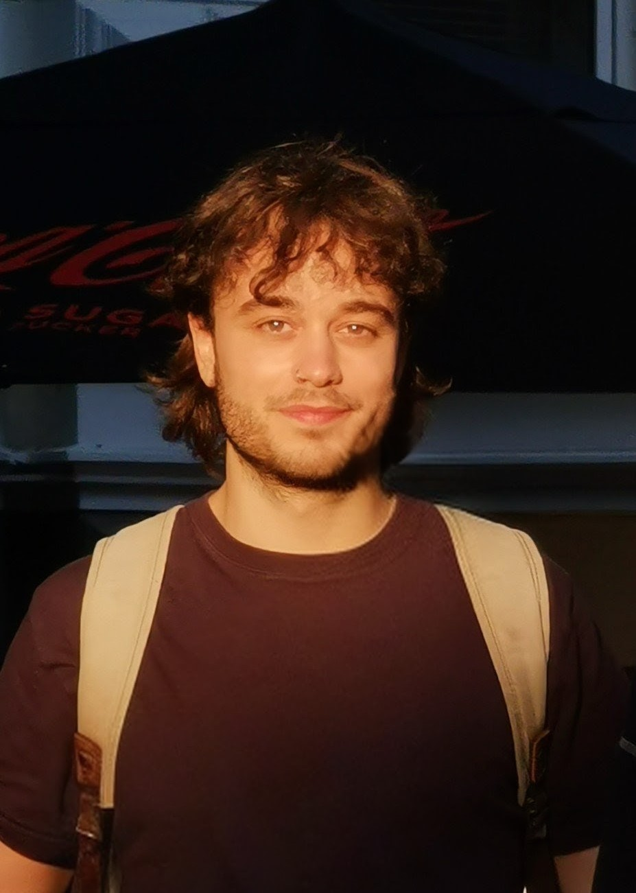

FL

Hi! I'm
Filipe Laitenberger
PhD Candidate at HU Berlin
I research Latent Reasoning and World Models
[my firstname].[my lastname]@hu-berlin.de
[my firstname].[my lastname]@hu-berlin.de
Select Publications
{{ pub.title }}
{{ pub.firstAuthor }}
{{ pub.coAuthors }}
{{ pub.venue }}
{{ pub.citations }}
Scholar
GitHub
LinkedIn